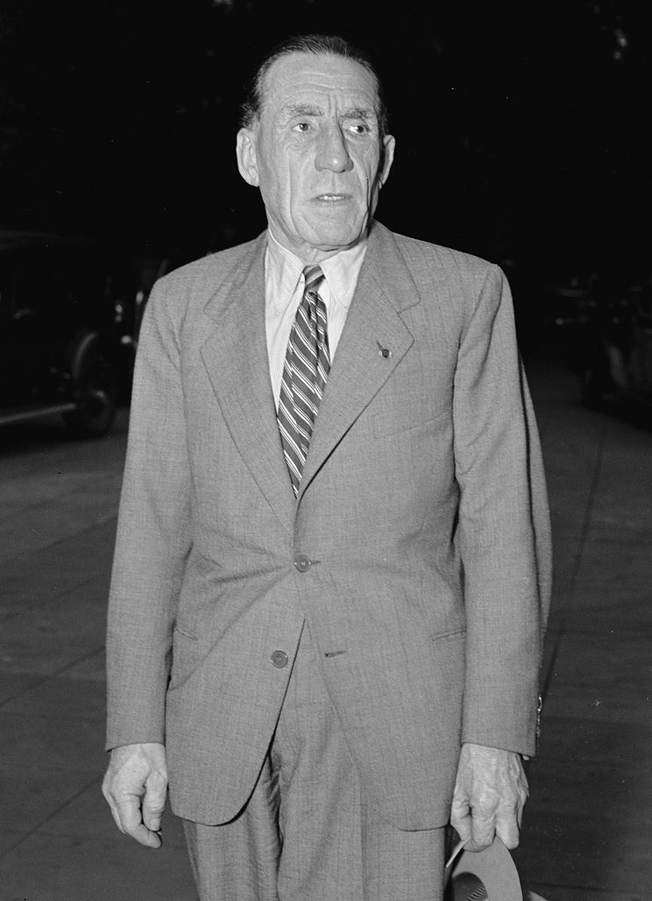

Renault
Луи Рено (фр. Louis Renault, 12 февраля 1877 — 24 октября 1944) — французский промышленник, один из основателей компании Renault (Рено).
Четвёртый ребёнок в семье французского бизнесмена, Луи с детства интересовался техникой и провёл много времени в мастерской паровых машин Леона Серполе, а также разбираясь со старыми двигателями Panhard во втором доме семьи в Булонь-Бийанкуре. Свой первый автомобиль он создал в 1898 году, вместе с двумя помощниками модифицировав автомобиль «De Dion-Bouton» с двигателем мощностью 3/4 л.с. Основными нововведениями были передача крутящего момента от двигателя через трёхскоростную коробку передач (конструкцию которой он запатентовал через год) с высшей прямой передачей и карданный вал. Эту машину он назвал «Voiturette» (в пер. «Корзина»). Выиграв 24 декабря 1898 года пари с друзьями, что его машина сможет подняться вверх по склону Лепик на Монмартре, Луи Рено получил заказ на изготовление 13 подобных автомобилей. Видя коммерческий потенциал своего изобретения, он, вместе со своими двумя старшими братьями, Марселем и Фернаном, 25 февраля 1899 года основывал фирму «Société Renault Frères». Изначально управление компанией было возложено на старшего брата, Луи же взял на себя дизайн и конструкторскую работу, но с 1908 года, после ухода Фернана в отставку по состоянию здоровья, управление фирмой перешло к Луи (Марсель погиб во время автопробега Париж-Мадрид в 1903 году).
Начало жизни и карьера
Первая мировая война и межвоенный период
Став единственным владельцем, Луи Рено продолжил развивать компанию. Его изобретения, такие как гидравлический амортизатор и барабанный тормоз дошли до нынешних времён. С началом Первой мировой войны фирма перешла на производство необходимой для армии техники, в том числе в 1917 году приступила к выпуску одного из лучших танков Первой мировой FT17. После окончания Первой мировой войны Луи Рено был награждён Орденом Почётного Легиона. В 1918 году у Луи и его 21-летней жены родился сын — Жан-Луи. К 1920 году фирма Рено производила широкий спектр техники: от малолитражных автомобилей, грузовиков и сельскохозяйственной техники до промышленных и судовых механизмов. В начале 20-х годов Луи реорганизовал концерн по принципу «вертикальной интеграции». С 1934 года из-за снижения заработной платы, связанной с ужесточением трудовой дисциплины и экономическим спадом, начались волнения рабочих. Только вмешательство правительства в переговоры с рабочими позволило погасить конфликт. В связи с уступками рабочим у компании снизились доходы и Renault вернулась к производству малолитражек.
Вторая мировая война
C 1939 года Renault вновь стала одним из самых важных поставщиков для французской армии до падения Франции в 1940 году. Во время оккупации Франции во Второй мировой войне Луи отправился в Америку, чтобы уговорить США вступить в борьбу и прислать танки в подкрепление Союзников, однако в 1942 году союзники разбомбили часть его заводов; Луи так переживал, что потерял дар речи, но, дабы избежать своей смерти и смерти рабочих в концлагере, продолжил работать, но уже на Фашистскую Германию, как и другие крупные компании (Michelin, Citroën). В 1941 - 1942 годах Союзники бомбили заводы Renault, чтобы уничтожить промышленную силу Германии. В результате бомбардировок было уничтожено около 80% производственных мощностей Renault, как и других промышленников. После освобождения Франции Луи Рено был арестован по обвинению в промышленном сотрудничестве с нацистской Германией и отправлен в тюрьму во Френ, где он подвергся жестокому обращению. С проломленным черепом и переломом позвоночника его доставили в госпиталь Вилль-Эврар, где он и умер 24 октября 1944 года. Никакого расследования не проводилось. Три месяца спустя Renault была национализирована. 16 Января 1945 года правительство забирает управление заводов на себя, ничего не заплатив семье Луи. В 1967 году единственный наследник Луи, его сын Жан-Луи Рено, получил небольшую компенсацию, однако Луи официально не реабилитирован.